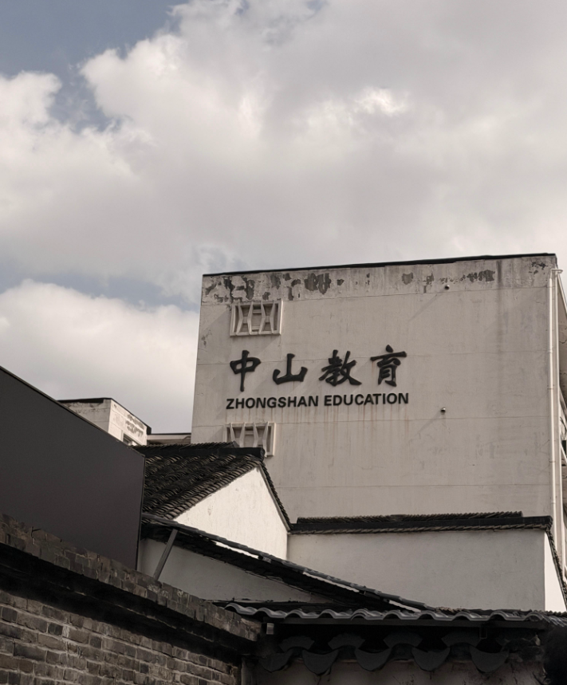
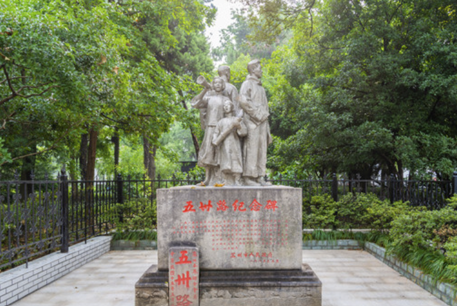
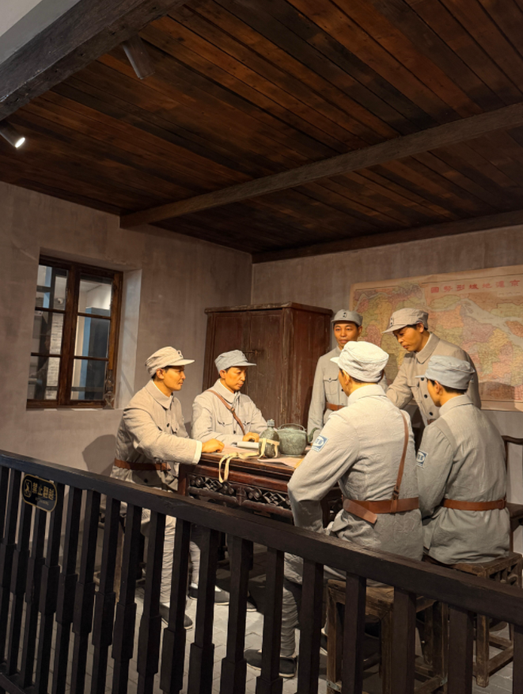
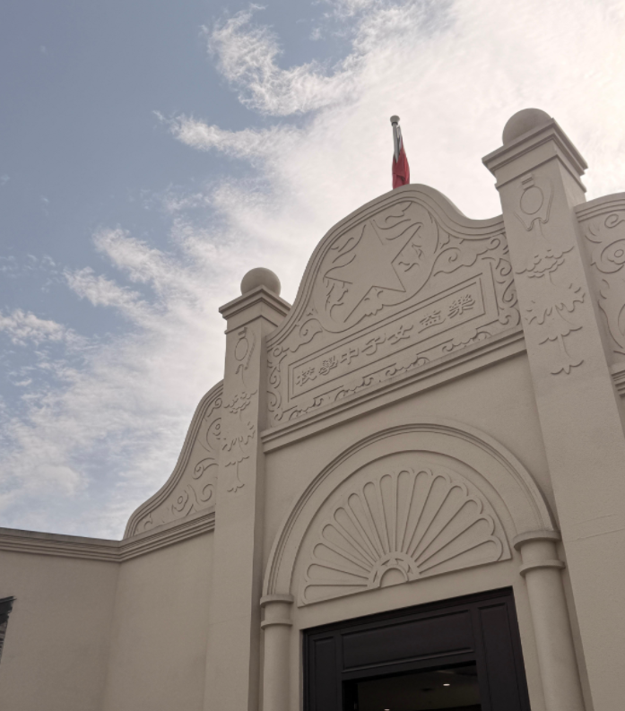
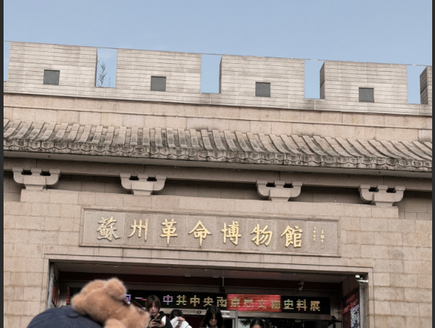
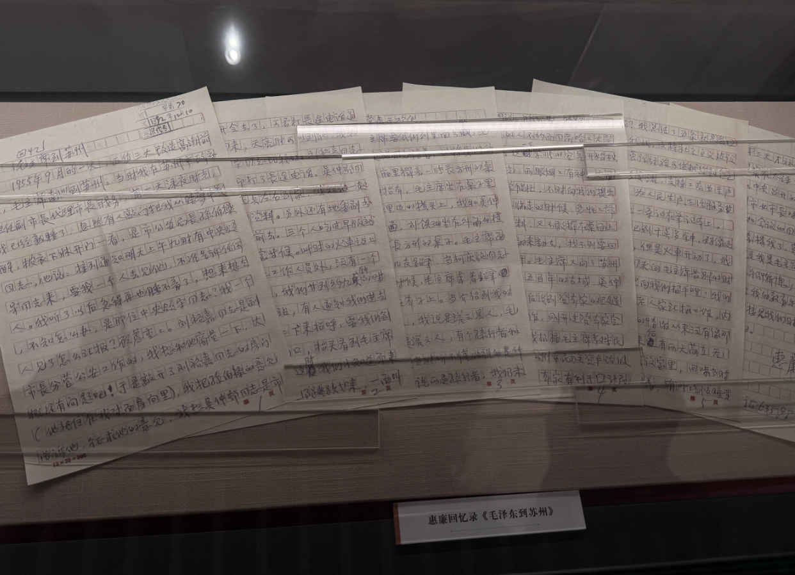
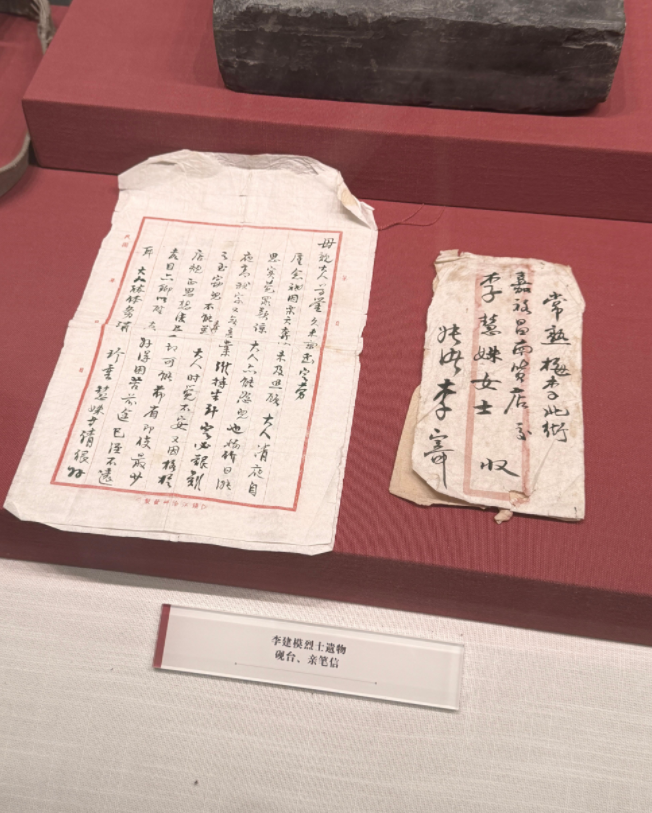
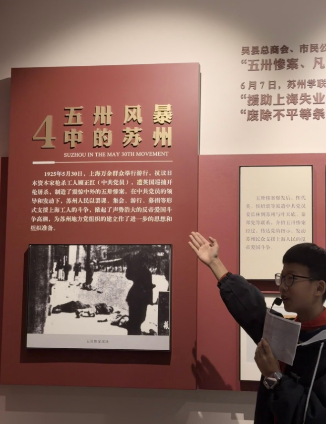
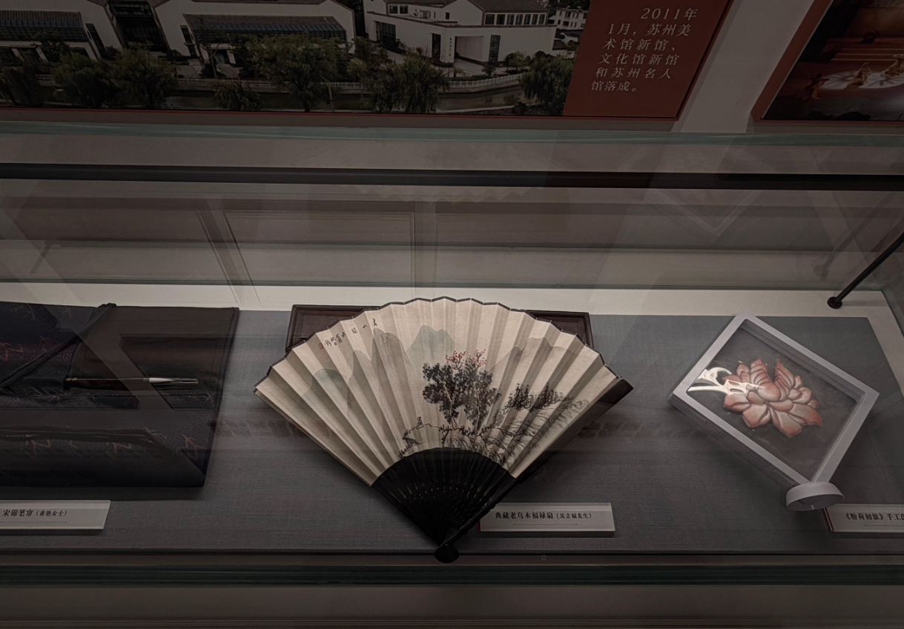

从城市的街道走到校园的旧址，再走进展厅，三个点位串成一条时间线。
五卅路是这条路的名字，也是一场运动留在苏州的名字；乐益女中的那栋楼，是苏州城内最早的党组织成立的地方；苏州革命博物馆，则把散落在城市里的细节收拢进一个展厅。
走完这三个点位，我们才明白：历史并不只在玻璃展柜里，它也就在我们每天路过的街口。
全国唯一以五卅运动命名的道路，全长约970米。
乐益女中旧址，江苏境内最早的独立支部之一。
三展厅基本陈列《光辉历程 苏州篇章》。

从募捐，到翻修一条小路，再到路口的一块碑。城市用一个路名，记住了1925年。

1925年5月30日，上海发生五卅惨案。消息传到苏州，学生们最先动了起来：罢课、集会、街头演讲，市民也加入募捐。短短数日，苏州各界共募集近两万元送往上海，支援罢工工人。
后来上海方面退回其中6000元。7月10日，苏州各界联合会决定用这笔余款翻修一条石板小路，并把它命名为“五卅路”。1926年5月30日，五卅运动周年之际，两方“五卅路纪念界石”立了起来。
1985年，界石被移到民治路口，并镌刻成今天的纪念碑。这条路全长约970米，是全国唯一一条以五卅运动命名的道路。

1925年9月，三个年轻人在乐益女中秘密开会，苏州有了第一个独立支部。

1925年9月初，侯绍裘、张闻天、叶天底三人在乐益女中秘密成立中共苏州独立支部。叶天底任书记，张闻天负责宣传工作。到当年年底，党员发展到24人。
乐益女中是当时苏州一所新式女子学校，校舍本身并不宏大，但它提供了一个相对隐蔽的场地，革命的火种才得以在课堂与走廊之间悄悄传开。这是江苏境内最早的独立支部之一。
三展厅、870余张照片、360余件文物。散在城里的细节被收拢在一起，看清了全貌。

博物馆的基本陈列名为《光辉历程 苏州篇章》，共分三个展厅，展出照片870余张、文物360余件。从晚清民初的社会变迁，到中共苏州地方组织的建立，再到抗战时期的活动，脉络清晰。
展厅里有一座半景画《阳澄烽火》，还原了洋沟溇战斗的场景。画面前景配合实物与灯光，是整馆最有现场感的一处。




我们这次最直接的感受是：五卅路的碑，比展板上的五卅路更打动人。因为它长在生活里：旁边是梧桐、是买菜的人、是放学经过的孩子。故事不需要被讲得很用力，它就在那儿。
对文旅宣传来说，这提示了两点：
第一，先给场景，再给意义。先让人看到路口的那块碑、看到树影落在石面上，观众才有兴趣追问“这是什么”。倒过来先喊口号，往往没人愿意停下来。
第二，把宏大叙事拆成可触摸的细节。一封家书、一件旧砚台、一份手稿上的红笔批注，比一句概括更有重量。我们在“李建模烈士遗物”前停留最久，就是因为那页信纸上有真实的笔迹。
汉语言文学给我们的训练，是把话说准；研学给我们的提醒，是把话说轻。两者结合，或许才是红色叙事“不费力”的方式。
11月7日，我们走过一条路，看了一栋楼，进了一座馆。
离开的时候天色已晚，路口那块碑还立在树影下。它不解释什么，但路过的人总会多看它一眼。